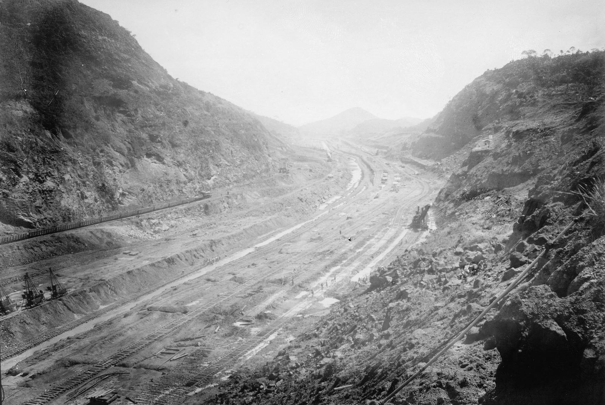

Entre Porto Velho e Guajará-Mirim, em Rondônia, no Brasil, os rios Madeira e Mamoré descem por uma sequência de cachoeiras e corredeiras que nenhum barco carregado vencia. Para tirar a borracha da Bolívia e do alto Madeira, era preciso contornar esse trecho por terra: uma ferrovia de 364 a 366 km aberta na floresta, sobre pântanos que a cheia cobria, num lugar onde a malária pegava quase todo mundo.
Duas empresas tentaram no século XIX e desistiram. A terceira, a Madeira-Mamoré Railway Co., de Percival Farquhar, terminou a obra em 1912, depois de contratar 21.817 homens. Quantos deles morreram é a pergunta que ninguém fecha: os registros da época ficam abaixo de dois mil, e as estimativas mais citadas falam em cerca de seis mil.
FICHAFicha da obra
| Quem quis | O Brasil, pelo Tratado de Petrópolis, assinado com a Bolívia em 17/11/1903. No artigo VII, o Brasil se obriga a construir uma ferrovia do porto de Santo Antônio, no rio Madeira, até Guajará-Mirim, no Mamoré, com um ramal até Vila Bela, na Bolívia, e diz que "se esforçará" por concluí-la em quatro anos.texto do tratado, promulgado pelo Decreto 5.161, de 10/03/1904 | 1 fonte |
|---|---|---|
| Por quê | Contornar as cachoeiras e corredeiras do Madeira e do Mamoré para escoar a borracha da Bolívia e a do alto Madeira e do Mato Grosso. | 2+ fontes |
| Tentativas anteriores | 1872–1873: a inglesa Public Works Construction Co., contratada pela empresa do coronel americano George Earl Church, abandonou a obra um ano e três dias depois de chegar. 1878–1879: a P. & T. Collins, de Filadélfia, parou deixando poucos quilômetros de linha. | 2+ fontes |
| Quem construiu | A Madeira-Mamoré Railway Co., fundada em 1907 pelo americano Percival Farquhar, que comprou a concessão vencida por Joaquim Catramby (transferência formal pelo Decreto 6.838, de 30/06/1908). Construtora: May, Jekyll & Randolph. | 2+ fontes |
| Prazo | Início simbólico em 04/07/1907, em Porto Velho; primeiro trecho, de cerca de 90 km até Jaci-Paraná, em 31/05/1910; último dormente em 30/04/1912. A data da inauguração diverge: 30/04, 15/07, 01/08 ou 07/09/1912, conforme a fonte. | diverge |
| Operários | 21.817 contratados e trazidos de fora entre 1907 e 1912, pela tabela da companhia; o ano de mais chegadas foi 1910, com 6.024. Um trabalhador ficava, em média, menos de três meses. A tabela não conta quem já vivia na região nem os indígenas. | 2+ fontes |
| Nacionalidades | "Mais de quarenta países", segundo Francisco Foot Hardman; outros trabalhos falam em mais de 50. | diverge |
| Custo | Contrato de 47.682:058$402; o governo pagou 40.474:872$622 até 1912; a companhia alegou ter gasto 81.675:731$612, segundo o historiador Abnael Machado de Lima. Manoel Rodrigues Ferreira fala em mais de 62 mil contos pagos pelo governo. Um aditivo de 1910 pagava £ 2.750 por km de lastro e pontes provisórias.réis e libras da época, sem conversão | diverge |
| O que não é custo | Os £ 2.000.000 do Tratado de Petrópolis são a indenização paga pelo Brasil à Bolívia, não o preço da ferrovia. | 2+ fontes |
| Doença | Malária acima de tudo: mais de 90% dos trabalhadores doentes, pelo relatório de Oswaldo Cruz de 1910. Quinino diário e obrigatório desde 01/08/1910.o percentual exato vem de uma fonte; que quase todos adoeciam, de várias | 2+ fontes |
| Hospital | Hospital da Candelária, entre Santo Antônio e Porto Velho, mantido pela companhia desde 1908; 11 médicos, alguns com experiência no Canal do Panamá; 120 a 150 doentes por dia em 1911.movimento diário segundo o historiador André Vasques Vital | 1 fonte |
| Mortes registradas | 1.552 óbitos na tabela da companhia de 1907 a 1912, a cifra mais repetida; 1.522 em outra versão; 1.693 em outra, atribuída a Ferreira e a Hardman. Todas abaixo de dois mil. | diverge |
| Mortes estimadas | Cerca de 6.000 na estimativa mais citada, inclusive pelo governo brasileiro; 6.208 na conta de Hiram Reis e Silva; 7.000 a 10.000 no romancista Errol Lincoln Uys; mais de 30.000 em Fiorelo Picoli. Ricardo Leite sustenta que não passam de 2.000. Ninguém registrou quem morreu fora do hospital. | diverge |
| O depois | Desativada pelo Decreto 58.501, de 25/05/1966; o último trem correu em 1972 (10/05 ou 10/07, conforme a fonte). Tombada pelo patrimônio nacional nos anos 2000: parte do pátio, o trecho de Porto Velho a Santo Antônio, as três caixas d'água e o cemitério da Candelária, não a linha inteira.as datas do tombamento divergem entre 2005 e 2008 | diverge |
| Hoje | Em 28/10/2025, o Ministério Público Federal processou Rondônia, a União e o IPHAN pelo abandono da linha, pedindo o tombamento dos 366 km e R$ 6 milhões de dano moral coletivo. A Prefeitura de Porto Velho anunciou para o começo de outubro de 2026 a volta do passeio de trem até Santo Antônio, depois de quase três décadas.data e locomotiva do primeiro passeio divergem entre os jornais | 2+ fontes |
01Uma ferrovia no tratado do Acre
Em 17 de novembro de 1903, em Petrópolis, no Rio de Janeiro, Brasil e Bolívia assinaram o tratado que deu o Acre ao Brasil. Pelo artigo III, o Brasil pagaria £ 2.000.000 à Bolívia, em duas parcelas, "por não haver equivalência nas áreas". Pelo artigo VII, assumia outra obrigação: construir uma ferrovia do porto de Santo Antônio, no rio Madeira, até Guajará-Mirim, no Mamoré, para os dois países usarem com as mesmas tarifas.
O motivo era o rio. Entre Santo Antônio e Guajará-Mirim, o Madeira e o Mamoré descem por uma escada de cachoeiras e corredeiras que barco carregado não passava. A borracha da Bolívia e do alto Madeira precisava de um desvio por terra. O tratado dava quatro anos, mas com cuidado na palavra: o Brasil "se esforçará" por concluir nesse prazo.
A ferrovia acabou partindo de Porto Velho, uns 7 km rio abaixo de Santo Antônio, e não entrou na Bolívia: termina em Guajará-Mirim, do lado brasileiro do Mamoré, diante de Guayaramerín. E não era a primeira vez que alguém tentava abri-la.

02Nem com todo o capital do mundo
Em 1872, o coronel americano George Earl Church levantou em Londres um empréstimo boliviano de £ 1.700.000 nominais, vendidos a 68%, e contratou a inglesa Public Works Construction Co. por £ 600.000. Os engenheiros chegaram a Santo Antônio em 6 de julho de 1872. Um ano depois, segundo o engenheiro Neville B. Craig, tinham três milhas e meia de levantamento, cerca de 5,6 km, e nem um pé de trilho assentado.
Em 9 de julho de 1873, um ano e três dias depois de chegar, a Public Works abandonou o contrato e foi à Justiça em Londres. Na petição, citada por Craig, a empresa descreveu a região como um ossuário, com os homens morrendo como moscas, e disse que, com todo o capital do mundo e metade da sua população, seria impossível construir a ferrovia.
Em 1878 veio a P. & T. Collins, de Filadélfia. O vapor Mercedita partiu em 3 de janeiro com 220 pessoas. O segundo navio, o Metropolis, com trilhos e trabalhadores, encalhou e se partiu na praia de Currituck, na Carolina do Norte, em 31 de janeiro de 1878, antes de deixar os Estados Unidos. Craig conta 80 empregados da ferrovia mortos; o marcador histórico da Carolina do Norte fala em 85 mortos no total; outras contas chegam a 102.
Dos 941 americanos que a Collins mandou, 719 chegaram a Santo Antônio, e pelo menos 23,6% dos 941 morreram, pela tabela de Craig, que compara: os soldados da União na Guerra Civil morreram em proporção menor. Da mortalidade dos cerca de 400 cearenses e 200 indígenas bolivianos contratados na região, ainda segundo Craig, nenhum registro foi mantido. Em 1879 a obra parou. Craig lista o que ficou: cerca de 3,5 km de trilho permanente e 6,3 km por onde rodava o trem de construção; os 7 km de linha que costumam ser citados dependem do que se mede. Ficou também uma locomotiva Baldwin em Santo Antônio.

03Trilho sobre galhos
A concessão foi vencida por Joaquim Catramby, que assinou contrato em 14 de novembro de 1906. Quem a fez andar foi o americano Percival Farquhar, que comprou a concessão e fundou a Madeira-Mamoré Railway Co. em 1907; a transferência formal veio pelo Decreto 6.838, de 30 de junho de 1908. A construtora foi a May, Jekyll & Randolph. Segundo o historiador Abnael Machado de Lima, a primeira turma saiu de Belém em 9 de junho de 1907, com 140 pessoas, e o início simbólico da obra foi em 4 de julho, em Porto Velho.
O traçado era o problema. As fotografias que o americano Dana B. Merrill fez da obra, entre 1909 e 1912, mostram o que as legendas descrevem: no trecho pantanoso do rio Abunã, trilhos assentados sobre estivas de galhada e de troncos de palmeira, para o trem de lastro passar por cima da água; pontes provisórias de madeira sobre os igarapés; rocha aberta a dinamite; aterros desfeitos pela chuva; vagões descarrilados. Numa delas, a legenda registra que, na cheia, o Madeira subia 14 metros acima do nível mínimo.
O primeiro trecho, de cerca de 90 km até Jaci-Paraná, foi entregue em 31 de maio de 1910. Em novembro daquele ano, um aditivo passou a pagar £ 2.750 por quilômetro de lastro e pontes provisórias. O Tribunal de Contas recusou o registro, e só o Decreto Legislativo 2.579, de 7 de junho de 1912, validou a despesa, segundo um parecer sobre os contratos publicado pelo Conjur.

04O demônio da Amazônia
O inimigo maior não estava no traçado. Desde 1908 a companhia mantinha o Hospital da Candelária, entre Santo Antônio e Porto Velho. Em 1910 e 1911 eram onze médicos, alguns com experiência no Canal do Panamá, e o serviço era chefiado pelo americano Carl Lovelace. Pelo levantamento do historiador André Vasques Vital, o hospital recebia de 120 a 150 doentes por dia em 1911, e 60 em 1912.
Em 1910, a própria companhia contratou Oswaldo Cruz. Ele viajou com Belisário Penna de 16 de junho a 29 de agosto e observou a obra de 9 de julho a 7 de agosto. Segundo os historiadores Júlio César Schweickardt e Nísia Trindade Lima, Cruz chamou a malária de demônio da Amazônia e registrou mais de 90% dos trabalhadores doentes; outra leitura do mesmo relatório fala em 80 a 90%. Um trabalhador ficava, em média, menos de três meses na obra.
A resposta foi tratar o remédio como regra de serviço. A partir de 1º de agosto de 1910, o quinino passou a ser dose diária e obrigatória, e o uso das medidas contra o mosquito, "obrigação de trabalho". Merrill fotografou homens com capuzes de tela na cabeça. E a malária não era a única: um relatório de Lovelace, citado em artigo sobre a região, conta 963 casos de beribéri na Candelária de 1908 a 1911.

05A conta que ninguém fecha
A tabela da companhia, reproduzida pelo escritor Hiram Reis e Silva, soma 21.817 trabalhadores trazidos de fora e 1.552 óbitos entre 1907 e 1912, com mais de 400 mortes por ano de 1909 a 1911. É o número que mais se repete. Mas há uma variante da mesma tabela que não fecha nos totais, uma versão que dá 1.522 e outra, atribuída a Manoel Rodrigues Ferreira e a Francisco Foot Hardman, que dá 1.693. Todas ficam abaixo de dois mil.
O registro conta o que o hospital viu. Não conta quem morreu no caminho, na viagem para Manaus ou Belém, ou depois de voltar doente para casa. Por isso as estimativas sobem: cerca de 6.000 na conta mais citada, que aparece também atribuída ao governo brasileiro; 6.208 na conta de Hiram Reis e Silva, que multiplica os registrados por quatro; 7.000 a 10.000 no romancista Errol Lincoln Uys; mais de 30.000 em Fiorelo Picoli. Na outra ponta, Ricardo Leite, no livro 1912 – Vitória na Selva, de 2020, diz que mesmo somando 20% de mortes não registradas o total fica abaixo de dois mil, e chama as contas de 6 a 20 mil de especulação.
O arquivo que poderia desempatar não existe mais: os papéis da ferrovia foram queimados quando ela foi desativada. Das chapas de Merrill sobraram 189 negativos, hoje no Museu Paulista da USP. Uma delas mostra o cemitério da Candelária, numa clareira atrás do hospital. Craig já tinha escrito, em 1907, sobre os homens da Collins que morreram depois de voltar para casa: não havia como saber quantos.

06Pronta tarde demais
O último dormente foi assentado em 30 de abril de 1912, e a inauguração aparece em datas diferentes conforme a fonte, entre abril e setembro daquele ano. O mercado que justificava a obra já tinha virado. Entre 1910 e 1911, o preço máximo da borracha fina caiu praticamente pela metade; a fatia amazônica da oferta mundial foi de 44% para 35% entre 1910 e 1912; e ao longo daquela década as plantações da Ásia passaram a produção brasileira, segundo um estudo publicado na revista Almanack.
A ferrovia ficou, e com ela uma cidade: Porto Velho nasceu da ferrovia. Entre 1910 e 1912, a Chicago Bridge & Iron Works montou ali três caixas d'água de 200 mil litros cada, que abasteceram a cidade e a ferrovia até a década de 1950 e hoje estão na bandeira do município. A locomotiva Baldwin que a Collins deixou em Santo Antônio em 1879 foi restaurada, batizada de Coronel Church e está no museu da ferrovia, em Porto Velho.
O Decreto 58.501, de 25 de maio de 1966, desativou a linha e a passou ao Ministério da Guerra; o último trem correu em 1972. O apelido que ficou, Ferrovia do Diabo, é o título do livro de Manoel Rodrigues Ferreira, de 1959. Antes dele, Ferreira publicou reportagens com fotos tiradas dos negativos de Merrill, que recebeu em 1956.
07Os trilhos agora
Nos anos 2000, o IPHAN tombou parte do que restou: um pedaço do pátio de Porto Velho, os trilhos até Santo Antônio, as três caixas d'água e o cemitério da Candelária. O resto da linha ficou de fora. Em 28 de outubro de 2025, o Ministério Público Federal processou Rondônia, a União e o IPHAN, pedindo o tombamento definitivo dos 366 km e R$ 6 milhões de dano moral coletivo, por causa de trilhos furtados, pontes metálicas desmontadas, dormentes arrancados e locomotivas abandonadas.
Em agosto de 2026, segundo o News Rondônia, a Prefeitura de Porto Velho fechou acordo com a Associação Brasileira de Preservação Ferroviária para recuperar a estrutura e mandou ao IPHAN uma carta de intenção sobre uma candidatura a Patrimônio Mundial da UNESCO, ainda em fase inicial. E anunciou para o começo de outubro a volta do passeio de trem pelos trilhos da Madeira-Mamoré até a igreja de Santo Antônio, parado, nas palavras do prefeito Léo Moraes, durante quase três décadas.
MITOSO que circula e o que o registro diz
- O que circula
Morreu um homem para cada dormente da ferrovia.
O que o registro dizÉ frase de efeito, não conta. Ela aparece impressa em 1942 e se espalhou nas décadas seguintes, até em versões de vinte mortos por dormente. A linha tem de 170 mil a cerca de 549 mil dormentes, conforme o cálculo, muito acima de qualquer estimativa de mortos.
- O que circula
Morreram 30 mil homens na obra.
O que o registro dizO número aparece em um autor, Fiorelo Picoli. Os registros da época contam menos de dois mil mortos, e as estimativas mais citadas, cerca de seis mil. "Cerca de 30 mil" também circula como número de trabalhadores, não de mortos, e a confusão provavelmente nasce aí.
- O que circula
A ferrovia foi construída por escravos.
O que o registro dizNenhuma das fontes consultadas diz isso. A escravidão tinha acabado no Brasil em 1888, e a tabela da companhia conta 21.817 homens contratados e trazidos de fora; Merrill fotografou trabalhadores recebendo salário junto a um carro de linha. Como era, na prática, a vida de quem trabalhava ali, longe de tudo e doente, é outra pergunta.
- O que circula
O apelido Ferrovia do Diabo vem da época da obra.
O que o registro dizEle foi popularizado pelo livro A Ferrovia do Diabo, de Manoel Rodrigues Ferreira, publicado em 1959. Não se achou uso mais antigo.
- O que circula
A Madeira-Mamoré foi desativada em 1966.
O que o registro diz1966 é o ano do decreto que a desativou. O último trem correu em 1972.
Episódio em produção
Toda semana, uma obra que não deveria ter ficado de pé.

Canal do Panamá
Istmo do Panamá, entre Colón e a Cidade do Panamá, Panamá · 1904–1914Cortar uma cordilheira que desmoronava de volta para dentro do corte, num istmo onde a febre amarela e a malária já tinham derrotado os franceses, e subir navios 26 metros até um lago feito de chuva.
Ler a obra →FONTESFontes
- Decreto 5.161, de 10/03/1904, que promulga o Tratado de Petrópolis (Câmara dos Deputados) — www2.camara.leg.br
- Neville B. Craig, Recollections of an Ill-Fated Expedition to the Headwaters of the Madeira River in Brazil, Lippincott, 1907 (Internet Archive) — archive.org
- Abnael Machado de Lima, "Cem anos do reinício da construção da EFMM 1907/2007", Gente de Opinião — gentedeopiniao.com.br
- Hiram Reis e Silva, "A Terceira Margem — parte XCVIII — Madeira-Mamoré, Ferrovia do Diabo XIX", Gente de Opinião — gentedeopiniao.com.br
- Anísio Gorayeb, "A lendária Madeira Mamoré", Gente de Opinião — gentedeopiniao.com.br
- Manoel Rodrigues Ferreira, A Ferrovia do Diabo, Melhoramentos, 1959
- Francisco Foot Hardman, Trem-fantasma: a ferrovia Madeira-Mamoré e a modernidade na selva, Companhia das Letras, 2005 — companhiadasletras.com.br
- Júlio César Schweickardt e Nísia Trindade Lima, "Os cientistas brasileiros visitam a Amazônia", História, Ciências, Saúde – Manguinhos, 2007 — scielo.br
- André Vasques Vital, "Visões do Alto Madeira: Comissão Rondon, malária e política em Santo Antônio do Madeira (1910-1915)", SBHC — sbhc.org.br
- "Hospital da Candelária: um lugar de cura e morte nos campos da selva madeirense", Revista FT — revistaft.com.br
- Sílvia Maria do Espírito Santo e Pedro Ribeiro, catálogo da exposição Ferrovia Madeira-Mamoré: Trilhos e Sonhos (BNDES / Museu Paulista da USP) — vfco.brazilia.jor.br
- "Cronologia da EFMM", revista Centro-Oeste nº 81, 1993 — vfco.brazilia.jor.br
- "Contratos de construção da estrada de ferro Madeira-Mamoré", Conjur, 03/07/2014 — conjur.com.br
- "O que levou a Madeira-Mamoré a ser conhecida como Ferrovia do Diabo", Revista Ferroviária, 03/11/2025 — revistaferroviaria.com.br
- "'Indústria maldita' ou 'árvore de ouro'? O debate econômico nos tempos do ciclo da borracha, 1850-1914", Almanack — scielo.br
- North Carolina Department of Natural and Cultural Resources, "Wreck of the Metropolis (A-33)", 2023 — dncr.nc.gov
- "MPF pede na Justiça que estado tombe Estrada de Ferro Madeira-Mamoré", Portal O Fato, 06/11/2025 — portalofato.com.br
- News Rondônia, acordo da Prefeitura de Porto Velho com a ABPF, 04/08/2026
- "Passeio histórico pelos trilhos da Madeira-Mamoré até Santo Antônio é retomado", Rondônia Dinâmica, 17/09/2026 — rondoniadinamica.com
- "Prefeitura retoma passeio de trem na Madeira-Mamoré neste sábado", Diário RO, 29/09/2026 — diarioro.com.br
Imagens
- Fig. 01 — No trecho pantanoso do rio Abunã, uma estiva de troncos de palmeira leva a via por cima da água para o trem de lastro passar.: Dana B. Merrill, 1909–1912 (Acervo do Museu Paulista da USP) · Domínio público
- Fig. 02 — Uma das cachoeiras do rio Madeira em Santo Antônio, o obstáculo que a ferrovia existia para contornar.: Dana B. Merrill, 1909–1912 (Acervo do Museu Paulista da USP) · Domínio público
- Fig. 03 — Trabalhadores com capuzes de proteção contra mosquitos.: Dana B. Merrill, 1909–1912 (Acervo do Museu Paulista da USP) · Domínio público
- Fig. 04 — O cemitério da Candelária, atrás do hospital da companhia, entre Santo Antônio e Porto Velho.: Dana B. Merrill, 1909–1912 (Acervo do Museu Paulista da USP) · Domínio público
- Fig. 05 — Pélas de borracha aguardam o embarque junto a um vagão da EFMM.: Dana B. Merrill, 1909–1912 (Acervo do Museu Paulista da USP) · Domínio público
- Fig. 06 — A Baldwin que a P. & T. Collins deixou em Santo Antônio em 1879, restaurada e batizada Coronel Church, em Porto Velho, em 2006.: Freyah · CC BY-SA 3.0